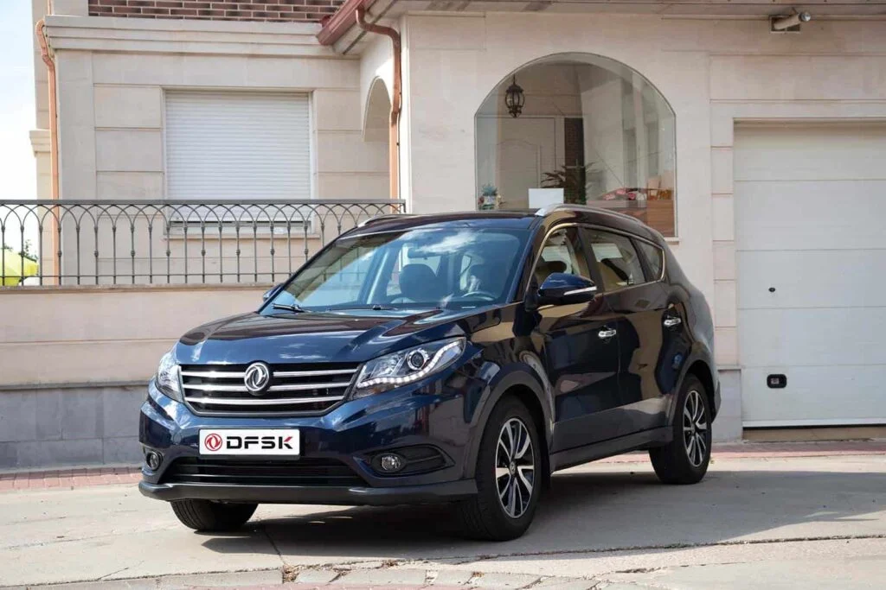
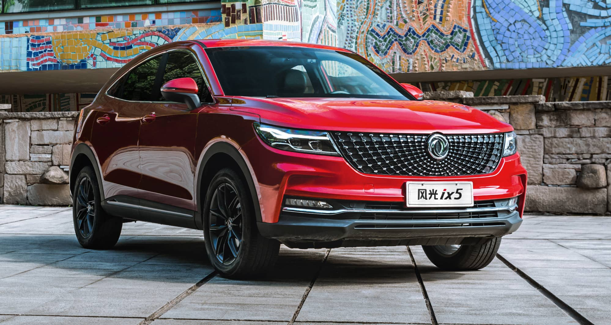
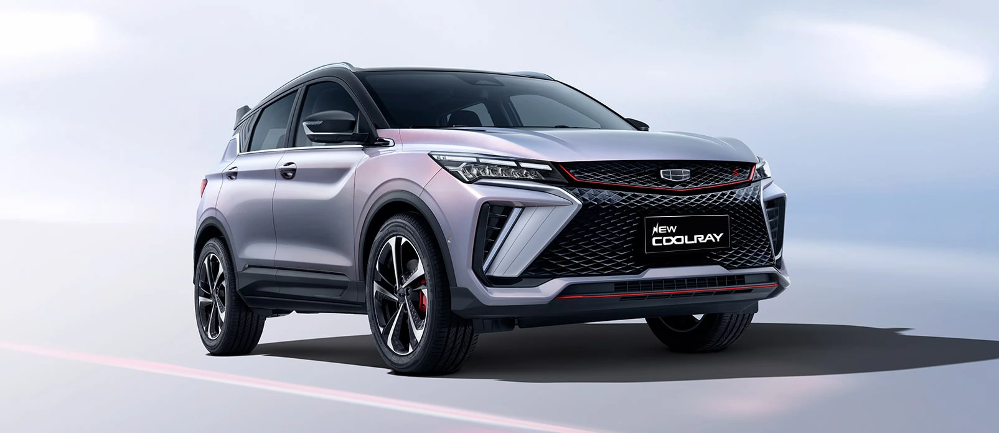

El DFSK 500 redefine completamente el confort y comodidad en la línea de SUV compactas. La estructura
de este SUV cuenta con un sistema programable del vehículo, que otorga una seguridad extra que le
brindará al conductor y a los ocupantes la tranquilidad en el viaje de principio a fin.
Catalogo

SUV 580
DFSK 580, el SUV de 7 plazas que combina estilo, espacio y versatilidad para llevar tu experiencia de
conducción al siguiente nivel. Con un diseño elegante y una amplia gama de características innovadoras,
ofrece comodidad para toda la familia sin comprometer el rendimiento ni la seguridad.
Catalogo

SUV F5
Este SUV deportivo combina un diseño audaz con un rendimiento excepcional, brindándote el equilibrio
perfecto entre estilo y potencia. Con su aerodinámica elegante y características de vanguardia, el DFSK
F5 está diseñado para los amantes de la aventura que buscan emociones sin límites.
Catalogo

NEW COOLRAY
El DFSK 500 redefine completamente el confort y comodidad en la línea de SUV compactas. La estructura
de este SUV cuenta con un sistema programable del vehículo, que otorga una seguridad extra que le
brindará al conductor y a los ocupantes la tranquilidad en el viaje de principio a fin.
video
SUV 580
DFSK 580, el SUV de 7 plazas que combina estilo, espacio y versatilidad para llevar tu experiencia de
conducción al siguiente nivel. Con un diseño elegante y una amplia gama de características innovadoras,
ofrece comodidad para toda la familia sin comprometer el rendimiento ni la seguridad.
Catalogo
SUV F5
Este SUV deportivo combina un diseño audaz con un rendimiento excepcional, brindándote el equilibrio
perfecto entre estilo y potencia. Con su aerodinámica elegante y características de vanguardia, el DFSK
F5 está diseñado para los amantes de la aventura que buscan emociones sin límites.
Catalogo
DFSK disfruta de una fuerte influencia y atracción de marca en el
sector automotriz. La marca Dongfeng es la primera marca registrada de
renombre en la industria automotriz china, la cual además figura entre
las 500 más prestigiosas del mundo.
En el medio siglo transcurrido desde la fundación de DFSK, la empresa
ya ha construido: capacidad de gestión y operación, capacidad de
producción, y capacidad de marketing para convertirse en líder dentro
de la industria. Además, ha establecido un sistema de I+D complejo y
abierto, el cual cuenta con una sólida fuerza investigadora y una
fuerte capacidad de creación independiente, con bases de I+D
distribuidas en lugares como China, Suecia o Alemania entre otros, los
cuales investigan de forma conjunta y se dedican a la aplicación y
creación tecnológica para la industria automotriz.
A finales de 2014 DFSK lleva lanzados al mercado un total de más de 30
millones de vehículos, incluyendo: vehículos turismos (incluyendo todo
tipo de modelos como sedanes SUV , monovolúmenes y mini-coches),
vehículos comerciales (camiones y autobuses), los cuales abarcan
series completas de vehículos pesados, medios, ligeros, minis y
vehículos modificados para uso especial; series de vehículos tales
como vehículos todoterreno especiales de alta maniobrabilidad,
vehículos para desierto, camiones todoterreno con tracción integral y,
por último, todo tipo de vehículos de nuevas energías tales como
vehículos híbridos, vehículos eléctricos puros, vehículos a gas
natural, etc.
Mirando hacia el futuro, DFSK seguirá siendo
fiel a su visión de un “Dongfeng perenne siempre en crecimiento, un
Dongfeng internacional de cara al mundo, y un Dongfeng que se
desarrolle de forma independiente y continua” y se esforzará por ser
más fuerte y mejor.